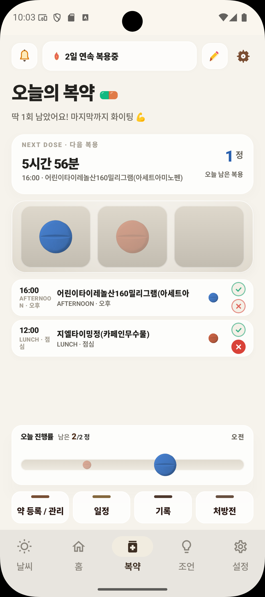
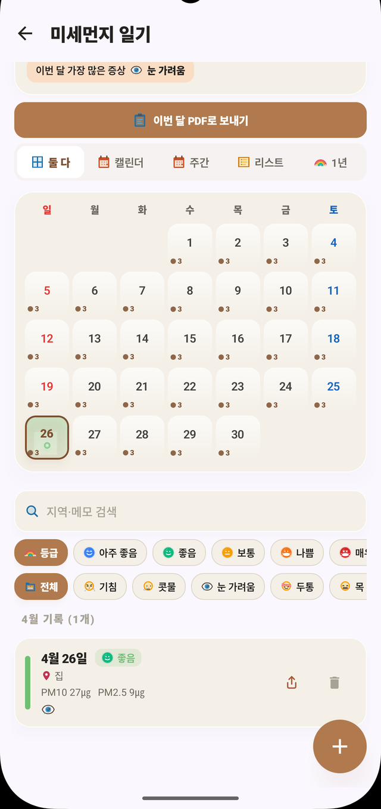
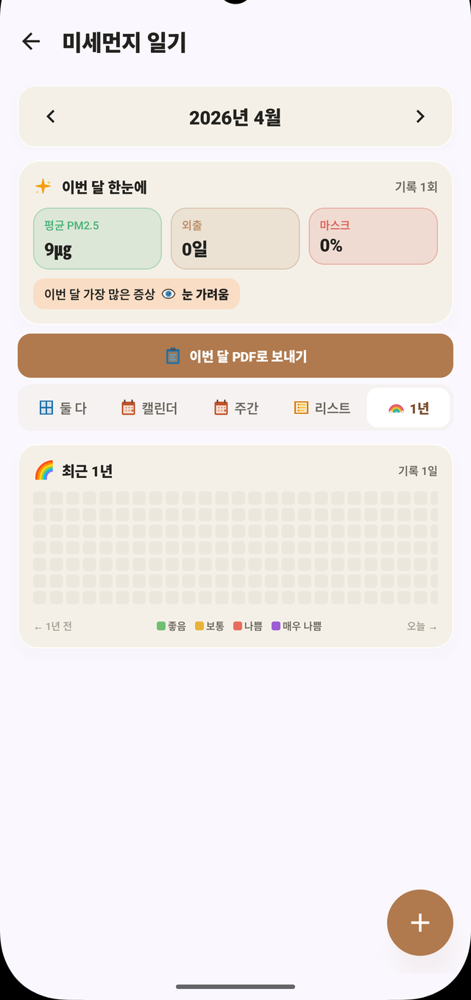
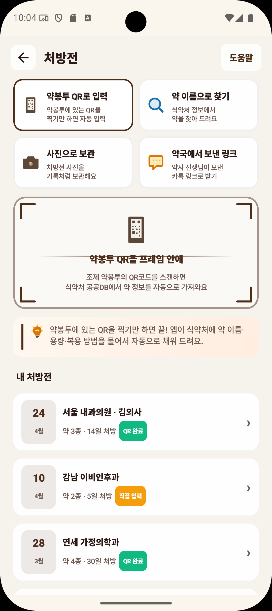
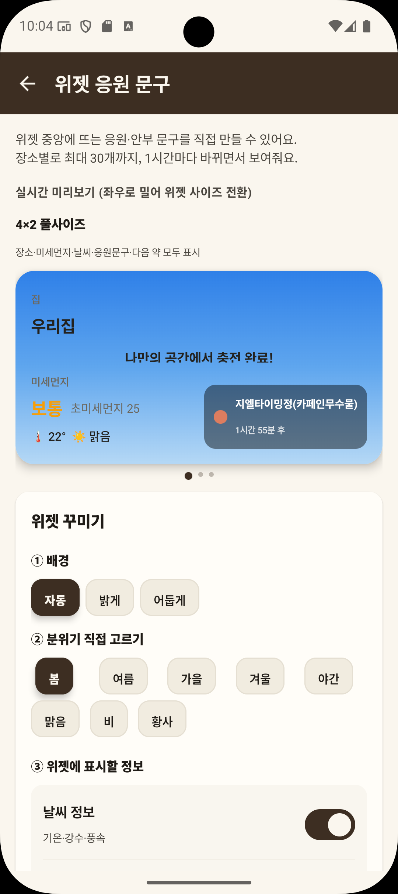

부가기능 · 미세먼지 그 너머
공기로 시작해서,
공기로 시작해서,
건강 일상까지.
호흡기 약 챙기는 일, 매일의 공기·증상 기록, 처방전 한 장으로 약 등록, 잠금 해제 없이 보는 위젯, 위급할 때 119까지 — 미세먼지 알리미 안에 다 들어 있어요.

① 복약 리마인더
먹어야 할 약,
먹어야 할 약,
잊지 않게.
아침/점심/오후/저녁/야간 5슬롯에 약을 등록하면 정해진 시간에 알림이 와요. 체크할 때마다 스트릭이 쌓이고, 공기 나쁜 날엔 호흡기 약을 카드 상단에 따로 강조해줘요.
- ✓알림 액션: 스누즈 30분 / 1시간, 복용 완료 한 번에
- ✓7일 / 30일 복약률 PDF로 의료진 공유
- ✓등록한 약 모양·색·복용 시각 자유 설정


② 미세먼지 일기
한 달, 일 년 뒤,
한 달, 일 년 뒤,
패턴이 보여요.
하루 한 번 증상·장소·공기 수치·활동을 남기면, 캘린더와 1년 365일 히트맵으로 내 몸의 패턴이 한눈에. 의사를 만날 땐 이번 달 PDF로 정리해서 공유.
- ✓월별 캘린더 + 1년 히트맵 + 사진 첨부
- ✓증상·활동·태그 필터로 패턴 검색
- ✓이번 달 PDF로 의료진 한 번에 전달


③ 위젯 + 약 사진 인식
잠금 해제 없이,
잠금 해제 없이,
한 장으로 입력.
홈 화면에 위젯을 두면 앱을 열지 않아도 미세먼지를 바로 확인할 수 있어요. 4×2 / 2×2 / 2×1 세 가지 사이즈. 약봉투 사진 한 장이면 약 이름이 자동으로 채워져요.
- ✓홈 화면 위젯 3종 — 등록한 장소 사이 전환도 가능
- ✓위젯 응원 문구 장소별로 최대 30개 커스텀
- ✓약 이름 인식은 인터넷 없이도 — 폰 안에서 처리
응급·뉴스 통합 카드
🚑 119 긴급 호출
호흡 곤란·천식 발작 시 즉시
📰 오늘의 미세먼지 뉴스
🔥 12개사"수도권 비상저감조치 발령…서울·인천·경기"
📡 실시간"황사 주의보, 마스크 착용 권고"
🏛️ 환경부"미세먼지 계절관리제 종료 안내"
④ 119 슬라이드콜 + 뉴스
위급할 땐, 빠르게.
위급할 땐, 빠르게.
평소엔, 정확하게.
호흡 곤란·천식 발작 같은 응급 상황엔 슬라이드 한 번으로 119 호출. 오남용 방지를 위한 법적 경고 + 사용 가이드까지 포함했어요. 평소엔 미세먼지 뉴스, 실시간 주요 뉴스, 환경부·질병관리청 정보를 한 곳에서.
- ✓119 슬라이드콜 — 사용 안내·법적 책임 가이드 포함
- ✓지오펜스 — 등록 장소 진입 시 자동 알림
- ✓뉴스 3트랙 — 미세먼지·실시간·전문기관
🦻 접근성 · 모두를 위한 디자인
크고 편한 글씨와
크고 편한 글씨와
부드러운 화면.
글자 크기 3단계, 다크 모드 자동 전환, 고대비 모드, 화면 읽어주기, 음성 안내까지 — 눈이 잘 안 보이시는 분, 어르신도 부담 없이 쓰실 수 있게.
글자 크기 3단계
앱 전체 글자를 한 번에. 어르신도 한눈에 알아볼 수 있게.
다크 / 시스템 자동
밤에도 눈부심 없이. WCAG AA 대비 유지.
음성 안내
알림이 오면 본문을 또박또박 읽어드려요. 어르신도 폰 보지 않고 들을 수 있게.